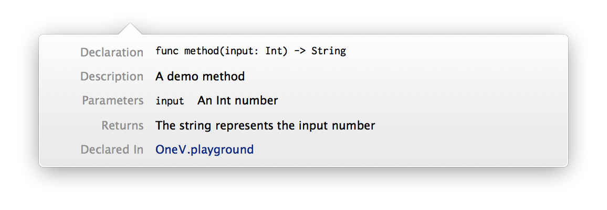

文档的重要性是毋庸置疑的，使用别人的代码时我们一般都会去查阅文档了解 API 的使用方法，与别人合作时我们也都要为各自的代码负责，一个最简单的方式就是撰写易读可用的文档。关于文档的种种好处就不再赘述了，在这一节中我们着重看看怎么为 Swift 的代码编写文档。
对于程序设计的文档，业界的标准做法都是自动生成。一般我们会将文档嵌入地以某种规范的格式以注释的形式写在实际代码的上方，这样文档的自动生成器就可以扫描源代码并读取这些符合格式的注释，最后生成漂亮的文档了。对于 Objective-C 来说，这方面的自动生成工具有 Apple 标准的 HeaderDoc，以及第三方的 appledoc 或者 Doxygen 等。
从 Xcode 5 开始，IDE 默认集成了提取文档注释并显示为 Quick Help 的功能，从那以后，能被 Xcode 识别的文档注释就成为了事实上的行业标准。在 Objective-C 时代，传统的 Javadoc 格式的注释是被接受的，而到了 Swift，Apple 采用了一套新的文档注释方法，对于一个简单的方法，我们的文档注释看起来应该是这样的：
/**
A demo method
- parameter input: An Int number
- returns: The string represents the input number
*/
func method(input: Int) -> String {
return String(input)
}
在文档注释的块中 (在这里是被 /**...*/ 包围的注释)，我们需要使用 - parameter 紧接输入参数名的形式来表达对输入参数的说明。如果有多个参数的情况下，我们会需要对应着写多组 - parameter 语句。如果返回值不是 Void 的话，我们还需要写 - returns: 来对返回进行说明。
这时，我们如果使用 Alt + 单击 的方式点选 method 的话，就可以看到由 Xcode 格式化后的 Quick Help 对话框：

在调用这个方法时，同样的提示也会出现，非常方便。
对于像属性这样的简单的声明，我们直接使用 /// 就可以了：
struct Person {
/// name of the person
var name: String
}
另外还有一些其他的关键字，你可以在这里找到一个相对完整的列表。
现在暂时除了 Xcode 自身的渲染之外，其他传统的文档自动生成工具还不能很好地读取 Swift 的文档注释。不过相信很快像 HeaderDoc 或者 appledoc 这样的工具就会进行更新并提供支持，这并没有太大的实现难度。另外，有一个叫做 jazzy 的新项目在这方面已经做出了一些成果。现在 jazzy 已经被 CocoaPods 用作提取 Swift 文档的工具，成为事实上的标准了。
最后，如果你觉得在 Xcode 中手写 -parameter 或者 -returns 这样的东西非常浪费时间的话，可以尝试使用一款叫做 VVDocumenter 的 Xcode 插件，它能够帮助你快速并且自动地生成符合格式的文档注释模板，你需要做的只是填上你需要的描述。
作为利益相关的说明，
VVDocumenter的开发者就是我本人，欢迎大家使用。:)